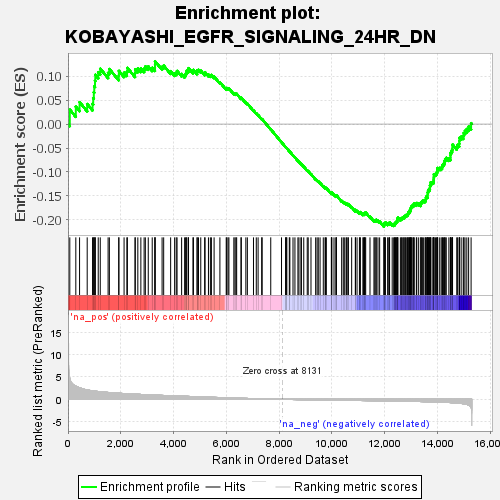
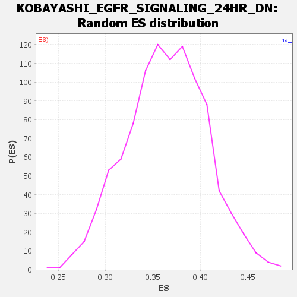

| Dataset | DGErankName |
| Phenotype | NoPhenotypeAvailable |
| Upregulated in class | na_neg |
| GeneSet | KOBAYASHI_EGFR_SIGNALING_24HR_DN |
| Enrichment Score (ES) | -0.2142271 |
| Normalized Enrichment Score (NES) | NaN |
| Nominal p-value | NaN |
| FDR q-value | 1.0 |
| FWER p-Value | 0.0 |

| SYMBOL | RANK IN GENE LIST | RANK METRIC SCORE | RUNNING ES | CORE ENRICHMENT | |
|---|---|---|---|---|---|
| 1 | ACOX2 | 68 | 4.741 | 0.0300 | No |
| 2 | IER3 | 296 | 2.918 | 0.0362 | No |
| 3 | MET | 438 | 2.578 | 0.0457 | No |
| 4 | CARD10 | 727 | 2.097 | 0.0418 | No |
| 5 | TFPI2 | 930 | 1.894 | 0.0422 | No |
| 6 | TMEM158 | 955 | 1.874 | 0.0543 | No |
| 7 | PRPS1 | 978 | 1.860 | 0.0664 | No |
| 8 | DHFR | 995 | 1.847 | 0.0788 | No |
| 9 | WWTR1 | 1023 | 1.825 | 0.0903 | No |
| 10 | UPP1 | 1035 | 1.821 | 0.1028 | No |
| 11 | ZC3HAV1 | 1145 | 1.734 | 0.1082 | No |
| 12 | DPAGT1 | 1222 | 1.684 | 0.1154 | No |
| 13 | PARP2 | 1519 | 1.530 | 0.1069 | No |
| 14 | CCND1 | 1567 | 1.510 | 0.1148 | No |
| 15 | RRP15 | 1923 | 1.368 | 0.1012 | No |
| 16 | GINS3 | 1927 | 1.365 | 0.1110 | No |
| 17 | FAM111A | 2124 | 1.279 | 0.1073 | No |
| 18 | NUDT15 | 2231 | 1.245 | 0.1093 | No |
| 19 | SLCO4A1 | 2249 | 1.238 | 0.1172 | No |
| 20 | PHLDA2 | 2539 | 1.151 | 0.1064 | No |
| 21 | SLC43A3 | 2547 | 1.147 | 0.1143 | No |
| 22 | PSAT1 | 2645 | 1.118 | 0.1160 | No |
| 23 | NAP1L1 | 2760 | 1.084 | 0.1163 | No |
| 24 | TUBB | 2883 | 1.043 | 0.1158 | No |
| 25 | PNN | 2930 | 1.032 | 0.1203 | No |
| 26 | PUS7 | 3040 | 1.000 | 0.1203 | No |
| 27 | HNRNPDL | 3190 | 0.963 | 0.1175 | No |
| 28 | CMC2 | 3293 | 0.936 | 0.1175 | No |
| 29 | PAICS | 3295 | 0.936 | 0.1243 | No |
| 30 | STEAP1 | 3297 | 0.935 | 0.1310 | No |
| 31 | TNFRSF12A | 3564 | 0.868 | 0.1197 | No |
| 32 | SPHK1 | 3624 | 0.856 | 0.1220 | No |
| 33 | ODC1 | 3888 | 0.800 | 0.1104 | No |
| 34 | PSRC1 | 4039 | 0.763 | 0.1060 | No |
| 35 | PPIF | 4099 | 0.749 | 0.1075 | No |
| 36 | TYMS | 4131 | 0.742 | 0.1108 | No |
| 37 | ETV5 | 4304 | 0.705 | 0.1046 | No |
| 38 | SLC20A1 | 4418 | 0.680 | 0.1020 | No |
| 39 | SPRED2 | 4456 | 0.670 | 0.1044 | No |
| 40 | PRIM1 | 4478 | 0.665 | 0.1079 | No |
| 41 | NOP56 | 4499 | 0.662 | 0.1114 | No |
| 42 | GALNT10 | 4557 | 0.646 | 0.1123 | No |
| 43 | DUT | 4564 | 0.644 | 0.1166 | No |
| 44 | CCND3 | 4733 | 0.607 | 0.1099 | No |
| 45 | RRM1 | 4752 | 0.604 | 0.1131 | No |
| 46 | NRG1 | 4891 | 0.576 | 0.1081 | No |
| 47 | TFDP1 | 4892 | 0.576 | 0.1123 | No |
| 48 | ELL2 | 4943 | 0.563 | 0.1131 | No |
| 49 | AXL | 5029 | 0.539 | 0.1114 | No |
| 50 | NEMP1 | 5177 | 0.507 | 0.1053 | No |
| 51 | CDC42EP1 | 5191 | 0.503 | 0.1081 | No |
| 52 | ITGA6 | 5320 | 0.479 | 0.1031 | No |
| 53 | SNRPD1 | 5393 | 0.465 | 0.1017 | No |
| 54 | POLR3K | 5432 | 0.456 | 0.1025 | No |
| 55 | MAFF | 5534 | 0.434 | 0.0990 | No |
| 56 | MCM6 | 5754 | 0.392 | 0.0873 | No |
| 57 | ORC1 | 5993 | 0.339 | 0.0740 | No |
| 58 | NOLC1 | 6011 | 0.335 | 0.0753 | No |
| 59 | DKK1 | 6060 | 0.324 | 0.0745 | No |
| 60 | KIF18B | 6095 | 0.317 | 0.0745 | No |
| 61 | MCM4 | 6282 | 0.279 | 0.0642 | No |
| 62 | TMPO | 6325 | 0.271 | 0.0634 | No |
| 63 | MCM3 | 6363 | 0.264 | 0.0628 | No |
| 64 | DONSON | 6389 | 0.260 | 0.0631 | No |
| 65 | MSH2 | 6553 | 0.228 | 0.0539 | No |
| 66 | HSPA14 | 6564 | 0.227 | 0.0549 | No |
| 67 | NME1 | 6737 | 0.201 | 0.0450 | No |
| 68 | G0S2 | 6794 | 0.193 | 0.0426 | No |
| 69 | POLR2D | 7026 | 0.150 | 0.0284 | No |
| 70 | DNAJC9 | 7132 | 0.132 | 0.0224 | No |
| 71 | HELLS | 7201 | 0.121 | 0.0188 | No |
| 72 | ABCE1 | 7337 | 0.102 | 0.0105 | No |
| 73 | POLE2 | 7354 | 0.100 | 0.0102 | No |
| 74 | DSCC1 | 7680 | 0.055 | -0.0110 | No |
| 75 | MSH6 | 8088 | 0.005 | -0.0380 | No |
| 76 | FEN1 | 8244 | -0.013 | -0.0482 | No |
| 77 | ENO2 | 8256 | -0.014 | -0.0488 | No |
| 78 | SRSF7 | 8266 | -0.015 | -0.0493 | No |
| 79 | DCBLD2 | 8289 | -0.017 | -0.0506 | No |
| 80 | CTPS1 | 8383 | -0.026 | -0.0566 | No |
| 81 | GINS2 | 8404 | -0.030 | -0.0577 | No |
| 82 | LMNB1 | 8523 | -0.045 | -0.0652 | No |
| 83 | MCM2 | 8596 | -0.051 | -0.0696 | No |
| 84 | CDCA4 | 8709 | -0.064 | -0.0766 | No |
| 85 | TIPIN | 8748 | -0.067 | -0.0786 | No |
| 86 | AREG | 8824 | -0.077 | -0.0830 | No |
| 87 | STC1 | 8841 | -0.079 | -0.0835 | No |
| 88 | CDT1 | 8930 | -0.089 | -0.0887 | No |
| 89 | SNRPA1 | 9062 | -0.105 | -0.0967 | No |
| 90 | E2F1 | 9099 | -0.107 | -0.0983 | No |
| 91 | PCNA | 9204 | -0.117 | -0.1043 | No |
| 92 | CCNE2 | 9381 | -0.134 | -0.1150 | No |
| 93 | NCAPG2 | 9435 | -0.138 | -0.1175 | No |
| 94 | ADORA2B | 9480 | -0.142 | -0.1194 | No |
| 95 | NAA15 | 9548 | -0.149 | -0.1228 | No |
| 96 | BLM | 9670 | -0.160 | -0.1297 | No |
| 97 | SOX9 | 9737 | -0.165 | -0.1328 | No |
| 98 | NCAPD3 | 9753 | -0.167 | -0.1326 | No |
| 99 | NT5E | 9786 | -0.169 | -0.1335 | No |
| 100 | RAD54B | 9975 | -0.183 | -0.1447 | No |
| 101 | SPDL1 | 9983 | -0.184 | -0.1438 | No |
| 102 | CX3CL1 | 9995 | -0.185 | -0.1432 | No |
| 103 | TOP2A | 10076 | -0.191 | -0.1471 | No |
| 104 | HMMR | 10148 | -0.196 | -0.1504 | No |
| 105 | HAT1 | 10161 | -0.197 | -0.1498 | No |
| 106 | CDC45 | 10167 | -0.198 | -0.1486 | No |
| 107 | PBK | 10366 | -0.212 | -0.1602 | No |
| 108 | FOSL1 | 10426 | -0.217 | -0.1626 | No |
| 109 | RRM2 | 10466 | -0.219 | -0.1636 | No |
| 110 | GINS1 | 10532 | -0.224 | -0.1663 | No |
| 111 | ATAD2 | 10554 | -0.225 | -0.1660 | No |
| 112 | PLK4 | 10601 | -0.229 | -0.1674 | No |
| 113 | BARD1 | 10621 | -0.230 | -0.1670 | No |
| 114 | RAD51AP1 | 10745 | -0.239 | -0.1734 | No |
| 115 | SMC4 | 10886 | -0.250 | -0.1809 | No |
| 116 | DTL | 10887 | -0.250 | -0.1791 | No |
| 117 | KIF15 | 10949 | -0.254 | -0.1813 | No |
| 118 | KIF2C | 11039 | -0.260 | -0.1853 | No |
| 119 | RANGAP1 | 11057 | -0.261 | -0.1845 | No |
| 120 | BUB1B | 11074 | -0.263 | -0.1836 | No |
| 121 | FANCI | 11170 | -0.272 | -0.1880 | No |
| 122 | TEX30 | 11196 | -0.273 | -0.1876 | No |
| 123 | TK1 | 11227 | -0.275 | -0.1876 | No |
| 124 | FABP5 | 11228 | -0.275 | -0.1856 | No |
| 125 | GPSM2 | 11251 | -0.278 | -0.1851 | No |
| 126 | NCAPG | 11276 | -0.279 | -0.1846 | No |
| 127 | UNG | 11439 | -0.293 | -0.1932 | No |
| 128 | SPC25 | 11589 | -0.305 | -0.2009 | No |
| 129 | BRCA1 | 11623 | -0.308 | -0.2009 | No |
| 130 | CDKN3 | 11665 | -0.311 | -0.2013 | No |
| 131 | CENPA | 11674 | -0.312 | -0.1996 | No |
| 132 | BUB1 | 11741 | -0.318 | -0.2016 | No |
| 133 | KIF14 | 11805 | -0.323 | -0.2035 | No |
| 134 | DEPDC1 | 11968 | -0.338 | -0.2118 | Yes |
| 135 | CSE1L | 11976 | -0.338 | -0.2098 | Yes |
| 136 | CDK1 | 11977 | -0.339 | -0.2073 | Yes |
| 137 | ORC6 | 12006 | -0.341 | -0.2067 | Yes |
| 138 | CKLF | 12022 | -0.343 | -0.2052 | Yes |
| 139 | TUBG1 | 12109 | -0.351 | -0.2083 | Yes |
| 140 | ECT2 | 12130 | -0.353 | -0.2071 | Yes |
| 141 | CDK2 | 12177 | -0.358 | -0.2075 | Yes |
| 142 | TRIP13 | 12181 | -0.358 | -0.2051 | Yes |
| 143 | TTK | 12280 | -0.368 | -0.2089 | Yes |
| 144 | CENPN | 12337 | -0.372 | -0.2099 | Yes |
| 145 | NOC3L | 12370 | -0.376 | -0.2093 | Yes |
| 146 | E2F8 | 12376 | -0.376 | -0.2069 | Yes |
| 147 | ASPM | 12407 | -0.379 | -0.2061 | Yes |
| 148 | LMNB2 | 12421 | -0.381 | -0.2042 | Yes |
| 149 | CDC25A | 12447 | -0.384 | -0.2031 | Yes |
| 150 | SMC2 | 12472 | -0.387 | -0.2019 | Yes |
| 151 | STIL | 12473 | -0.387 | -0.1991 | Yes |
| 152 | MYBL1 | 12483 | -0.388 | -0.1968 | Yes |
| 153 | CDC6 | 12499 | -0.389 | -0.1950 | Yes |
| 154 | SPAG5 | 12590 | -0.399 | -0.1981 | Yes |
| 155 | RACGAP1 | 12624 | -0.402 | -0.1973 | Yes |
| 156 | EXO1 | 12646 | -0.405 | -0.1958 | Yes |
| 157 | GMNN | 12683 | -0.408 | -0.1952 | Yes |
| 158 | BIRC5 | 12719 | -0.411 | -0.1945 | Yes |
| 159 | CENPM | 12733 | -0.413 | -0.1924 | Yes |
| 160 | HMGA2 | 12770 | -0.418 | -0.1917 | Yes |
| 161 | CEP55 | 12791 | -0.421 | -0.1900 | Yes |
| 162 | USP1 | 12833 | -0.426 | -0.1896 | Yes |
| 163 | KIF11 | 12864 | -0.431 | -0.1884 | Yes |
| 164 | TIMELESS | 12881 | -0.433 | -0.1863 | Yes |
| 165 | KPNA2 | 12889 | -0.434 | -0.1836 | Yes |
| 166 | CCNB1 | 12929 | -0.438 | -0.1830 | Yes |
| 167 | NEK2 | 12937 | -0.439 | -0.1803 | Yes |
| 168 | RFC3 | 12972 | -0.444 | -0.1793 | Yes |
| 169 | RNASEH2A | 12977 | -0.444 | -0.1764 | Yes |
| 170 | VRK1 | 12991 | -0.446 | -0.1740 | Yes |
| 171 | RFC5 | 13006 | -0.447 | -0.1716 | Yes |
| 172 | RFC4 | 13033 | -0.451 | -0.1701 | Yes |
| 173 | TUBB4B | 13077 | -0.456 | -0.1696 | Yes |
| 174 | NDC80 | 13091 | -0.457 | -0.1671 | Yes |
| 175 | PKMYT1 | 13116 | -0.459 | -0.1654 | Yes |
| 176 | CCNF | 13195 | -0.472 | -0.1671 | Yes |
| 177 | EZH2 | 13211 | -0.474 | -0.1647 | Yes |
| 178 | CKS1B | 13283 | -0.484 | -0.1659 | Yes |
| 179 | CDC20 | 13363 | -0.495 | -0.1675 | Yes |
| 180 | MCM10 | 13365 | -0.496 | -0.1640 | Yes |
| 181 | KIF23 | 13397 | -0.499 | -0.1624 | Yes |
| 182 | TREX2 | 13422 | -0.503 | -0.1603 | Yes |
| 183 | TPX2 | 13461 | -0.510 | -0.1591 | Yes |
| 184 | ZWINT | 13524 | -0.517 | -0.1595 | Yes |
| 185 | PRC1 | 13550 | -0.522 | -0.1573 | Yes |
| 186 | TCOF1 | 13558 | -0.524 | -0.1540 | Yes |
| 187 | ZWILCH | 13572 | -0.527 | -0.1510 | Yes |
| 188 | KIF4A | 13622 | -0.534 | -0.1503 | Yes |
| 189 | DDX39A | 13623 | -0.534 | -0.1465 | Yes |
| 190 | PSMC3IP | 13625 | -0.535 | -0.1426 | Yes |
| 191 | CHAF1A | 13640 | -0.537 | -0.1396 | Yes |
| 192 | CCNA2 | 13658 | -0.540 | -0.1368 | Yes |
| 193 | TUBB2A | 13698 | -0.546 | -0.1354 | Yes |
| 194 | RAD51 | 13708 | -0.547 | -0.1321 | Yes |
| 195 | AURKA | 13711 | -0.549 | -0.1282 | Yes |
| 196 | DSN1 | 13732 | -0.553 | -0.1255 | Yes |
| 197 | FAM216A | 13736 | -0.555 | -0.1216 | Yes |
| 198 | DBF4 | 13794 | -0.563 | -0.1213 | Yes |
| 199 | UBE2C | 13841 | -0.569 | -0.1202 | Yes |
| 200 | MKI67 | 13850 | -0.571 | -0.1166 | Yes |
| 201 | MELK | 13854 | -0.572 | -0.1126 | Yes |
| 202 | ASF1B | 13858 | -0.573 | -0.1086 | Yes |
| 203 | GTSE1 | 13861 | -0.575 | -0.1046 | Yes |
| 204 | EXOSC8 | 13918 | -0.583 | -0.1041 | Yes |
| 205 | SHCBP1 | 13953 | -0.590 | -0.1020 | Yes |
| 206 | AURKB | 13979 | -0.597 | -0.0993 | Yes |
| 207 | ETV1 | 13992 | -0.601 | -0.0958 | Yes |
| 208 | PLK1 | 13998 | -0.602 | -0.0917 | Yes |
| 209 | ESPL1 | 14064 | -0.617 | -0.0915 | Yes |
| 210 | DLGAP5 | 14131 | -0.631 | -0.0913 | Yes |
| 211 | NUSAP1 | 14169 | -0.638 | -0.0891 | Yes |
| 212 | H2AZ1 | 14184 | -0.642 | -0.0854 | Yes |
| 213 | IL11 | 14220 | -0.652 | -0.0829 | Yes |
| 214 | PA2G4 | 14253 | -0.659 | -0.0803 | Yes |
| 215 | CDCA3 | 14268 | -0.663 | -0.0764 | Yes |
| 216 | CKS2 | 14290 | -0.669 | -0.0729 | Yes |
| 217 | RFWD3 | 14328 | -0.676 | -0.0704 | Yes |
| 218 | CDCA8 | 14427 | -0.704 | -0.0718 | Yes |
| 219 | CENPU | 14485 | -0.724 | -0.0703 | Yes |
| 220 | HMGB2 | 14487 | -0.725 | -0.0651 | Yes |
| 221 | UBE2S | 14492 | -0.726 | -0.0600 | Yes |
| 222 | POLA2 | 14521 | -0.738 | -0.0565 | Yes |
| 223 | ERCC6L | 14551 | -0.751 | -0.0530 | Yes |
| 224 | NCAPH | 14565 | -0.757 | -0.0483 | Yes |
| 225 | EREG | 14566 | -0.758 | -0.0428 | Yes |
| 226 | H2AX | 14726 | -0.825 | -0.0473 | Yes |
| 227 | HJURP | 14759 | -0.841 | -0.0433 | Yes |
| 228 | RANBP1 | 14819 | -0.870 | -0.0409 | Yes |
| 229 | PIMREG | 14825 | -0.874 | -0.0349 | Yes |
| 230 | DUSP5 | 14829 | -0.876 | -0.0287 | Yes |
| 231 | TUBB6 | 14892 | -0.914 | -0.0261 | Yes |
| 232 | UCK2 | 14971 | -0.969 | -0.0243 | Yes |
| 233 | MYBL2 | 14993 | -0.989 | -0.0185 | Yes |
| 234 | TGFA | 15038 | -1.032 | -0.0139 | Yes |
| 235 | MCM5 | 15107 | -1.125 | -0.0102 | Yes |
| 236 | RFC2 | 15175 | -1.297 | -0.0052 | Yes |
| 237 | SRM | 15269 | -1.803 | 0.0018 | Yes |
